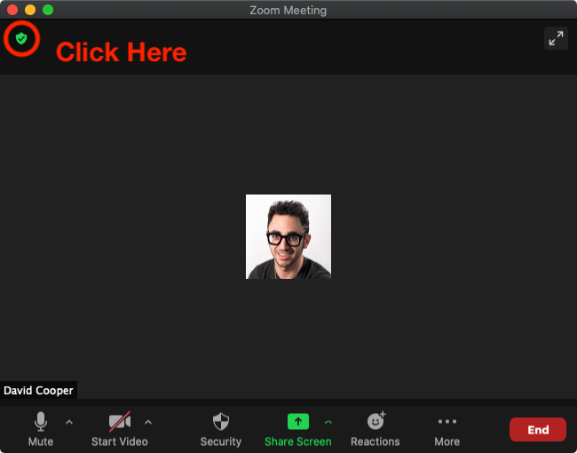
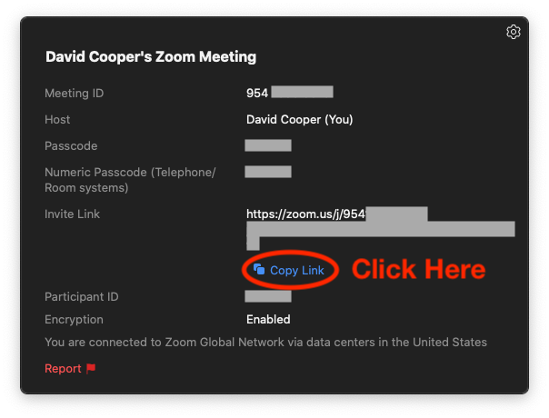

Zoom¶
Here are the instructions to start Zoom broadcasting via a room.
Prerequisites¶
- The systems administrator must have enabled Zoom (In the
.envfile, setZOOM_ENABLED=1). - You must have Zoom installed (https://zoom.us/).
Zoom Time Limits
If you're not using a paid Zoom account, or your systems administrator has not set up a paid account, there are room time limits for group meetings held in Zoom rooms. (40 minutes at the time of this writing.) Your show will be capped at that length.
Walkthrough¶
- Create and start a Zoom room.
- Click on the Meeting Information icon, shown below. 
- In the Meeting Information pop-up, copy the link to the Zoom by clicking Copy Link, show below. 
- Paste the link into the Room Link input, choose a show length, and click Start Zoom Broadcast Now.
- As soon as the Broadcast Bot has entered your Zoom room, your show starts, however you must produce make noise for the stream to transition to your show. This way, you can set up your show a little bit early. Just be quiet until you're ready!
Danger
If a Broadcast Bot attendee does not enter your Zoom room roughly 15 seconds after you click Start Zoom Broadcast Now, please contact the systems administrator or report a bug with Crazy Arms.